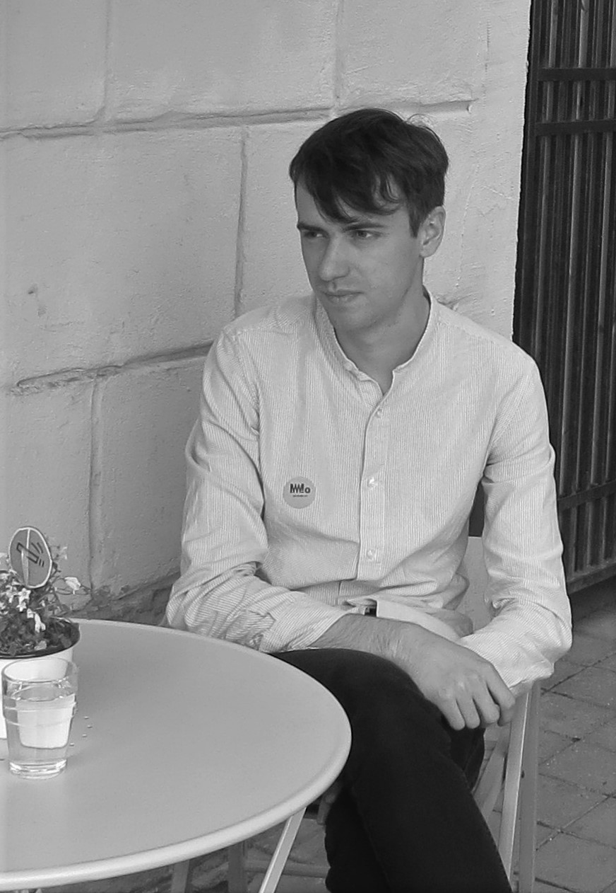

I'm a third year PhD student at the University of Edinburgh, working with Ben Davison and Pavel Safronov.
My academic CV can be found here
e-mail: sarunas (dot) kaubrys (at) sms dot ed dot ac dot ukResearch interests
I am working in cohomological Donaldson-Thomas theory. More broadly I am interested in geometric representation theory and derived algebraic geometry.